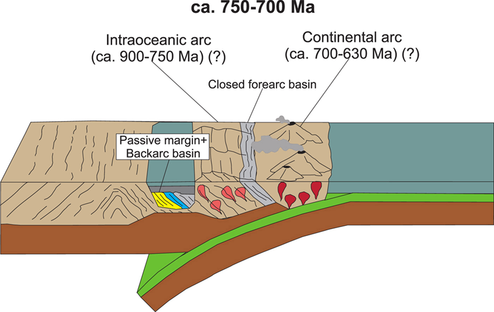

Structural analysis, petrography, and U-Pb geochronology of zircon and monazite revealing a Neoproterozoic basin superposition in the North Borborema Province

Resumo em Português
Eventos colisionais podem justapor terrenos provenientes de diferentes ambientes geológicos. No Domínio Central do Ceará, na Província Borborema, rochas orto e paraderivadas de contextos distintos foram acrecionadas durante a Orogenia Brasiliana, resultando no Grupo Independência, que compreende rochas metassedimentares aluminosas, mármores, rochas calc-silicáticas e anfibolitos. A formação desse grupo tem sido frequentemente vinculada a ambientes de margem passiva e de bacia de retroarco desenvolvidos durante o Neoproterozoico e ao desenvolvimento de arcos magmáticos. Entretanto, ainda não existe consenso sobre essa concepção.Para melhor compreender a formação do Grupo Independência, foram realizados estudos integrados de campo e laboratório, incluindo identificação de padrões estruturais e petrológicos e análises U-Pb em zircão e monazita por LA-ICP-MS. Os estudos de proveniência revelaram três possíveis áreas-fonte para as rochas metassedimentares: (i) exclusivamente o embasamento; (ii) o embasamento e o arco magmático Neoproterozoico; e (iii) exclusivamente o arco magmático Neoproterozoico. Um anfibolito intercalado com as rochas metassedimentares forneceu idade de cristalização de 756 ± 4 Ma, e um ortognaisse granítico forneceu idade de cristalização de 791 ± 10 Ma. Três intervalos de idade consistentes foram obtidos a partir das análises U-Pb em bordas de zircão e monazita: (i) ~700–660 Ma; (ii) ~635 Ma; e (iii) ~630–590 Ma.Os dados sugerem que o Grupo Independência resulta da interação de três ambientes deposicionais — margem passiva, retroarco e antearco. A inversão tectônica da bacia de margem passiva inicial ocorreu em ~700 Ma e representa o metamorfismo pré-colisional precoce, com influência subsequente do metamorfismo de arco magmático entre 700 e 635 Ma. Idades entre 630 e 590 Ma refletem o clímax do evento colisional e o transporte tectônico associado ao cavalgamento dessas rochas durante a Orogenia Brasiliana.